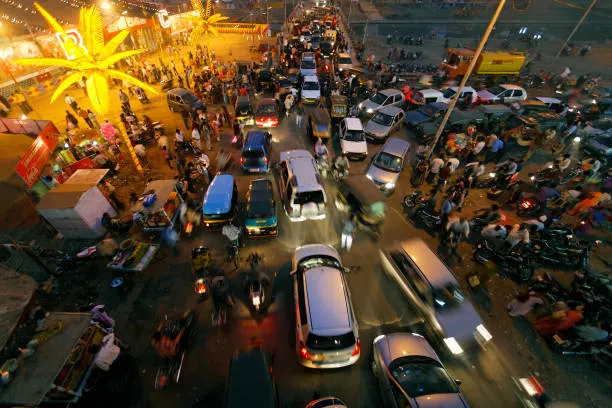
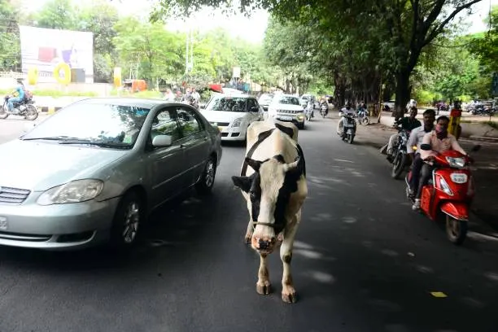

1. The Core Problem
Getting a license in India often feels completely disconnected from what it's actually like to ride here.
Millions of riders pass primary "Figure-8" tracks on pristine, artificial roads, and are practically
immediately cleared for the real world.
But the real world is chaotic. We deal with deep potholes, blind sudden speedbreakers, wandering animals, and
completely unpredictable traffic. Traditional tests don't prep riders for any of this, which is a huge factor
in why accident rates skyrocket on Indian roads.



2. The Fix: A Safe Space to Fail
To really help riders build those critical reflexes, we need a way to expose them to this chaos safely.
That's where this project comes in: a high-fidelity VR simulator built to let Indian riders train
against real-world street scenarios right from their living room.
I knew right away that gamepads wouldn't cut it—they simply don't teach you how to handle a physical bike.
While brainstorming, I decided to take standard VR controllers and treat them as 1:1 physical handlebars. You
track hand position to balance, twist to accelerate, and pull to brake. To further enforce realism, I
integrated a physical rope connecting the two VR controllers. The system is designed so that the setup only
functions as a handlebar when this rope is physically pulled taut. This tension trains the rider's muscles to
maintain a firm and proper grip as they would on a real vehicle.

Initial paper
ideation figuring out how to map standard VR controllers to physical scooter handlebars.
3. Nailing the Physics (and the Feel)
Before even thinking about how the game looked, I had to get the bike feeling exactly right. Standard arcade
controls weren't going to cut it. I built a bare-bones testing level to focus purely on physics and getting
the bike to handle like a real machine.

The bare-bones
prototyping map where I tested the leaning mechanics and mapped out the gameplay.
- Real Handlebar Dynamics: By locking your virtual hands to the bike and translating those
movements into leaning and balancing, it suddenly felt like riding a real bike.
- Engine Feedback: I even added realistic gears and engine lugging. If you forget to
downshift when you slow down—a classic beginner mistake—the whole bike shudders and the camera shakes. It's
a harsh but effective way to teach riders how to manage their speed and gears before entering a chaotic
intersection.
4. Turning Map Data into a Readable World
Building the world started with pulling real city data directly into Blender. But dropping raw map data
straight into Unity isn't enough. Initially, before applying any shaders or styling, the world looked
completely flat and lifeless—just plain grey and blue blocks.
I realized that in a highly chaotic VR environment, realistic graphics overwhelm the visual cortex and induce
motion sickness. To fix this, I developed a clean, minimalist flat-shaded art style, utilizing the iconic
Jodhpur Blue to radically reduce background visual noise. This empowers the rider's brain to quickly
distinguish between static street geometry and the incoming active hazards.
Since this current build is a prototype featuring only the Jodhpur map, my next focus is bringing it fully to
life. Future iterations will introduce a far more detailed environment heavily populated with dynamic traffic,
stray cows, emergent potholes, and unpredictable pedestrians to complete the cognitive simulation.
5. The Final Application & UI Integration
With the environment shaded and the physics locked in, the final piece was the User Interface. I needed to
ensure that giving players their stats (speed, gear, and score) didn't block their view of the road.
I integrated a clean, transparent UI structure where crucial stats are pushed to the corners, while keeping
the diegetic dashboard dials clearly visible on the bike itself. This way, the entire road remains perfectly
clear in the rider's peripheral vision—allowing absolute focus on safely navigating the hazards ahead.

The compiled
vertical slice: featuring the flat-shaded visual style, real-world map data, and the non-intrusive UI setup.
Reflection
The final prototype successfully bridges the gap between static licensing tests and the unpredictable reality
of Indian driving. It trains muscle memory, enforces cognitive hazard response, and delivers a comfortable,
deeply stylized VR experience designed to save lives on the road.